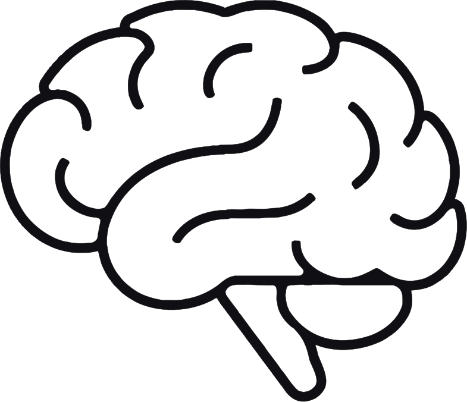

Узнаёте себя?
Возможно, вы давно живете по правилам, которые когда-то помогали быть любимым, нужным или «хорошим»

Возможно, это не черты характера,
а внутренние правила, которые когда-то помогали вам адаптироваться
Чем вы за это платите
Когда внутренние правила остаются с нами слишком долго, они начинают требовать высокую цену
Если цена стала слишком высокой, возможно, дело уже не в объёме усилий.
Возможно, пришло время исследовать сами правила
Я могу помочь
Ирина Садовникова · КПТ-психолог
Помогаю замечать внутренние правила, которые когда-то помогали чувствовать себя в безопасности,
а теперь мешают жить по-своему и чувствовать себя живым.
Как мы будем с вами работать
Замечаем напряжение
Находим внутреннее правило
Понимаем, как оно проявилось
Исследуем его плюсы и минусы
Постепенно его ослабляем
Учимся жить не только правильно, но и по-своему
Услуги
После нажатия на кнопку вы перейдете в сервис онлайн-записиБронируя услугу, вы подтверждаете, что ознакомились и соглашаетесь с условиями договора-оферты
Психологическая сессия
🗓️ Выберите удобную дату и время❓ В примечании коротко опишите ваш запрос
💳Оплатите встречу по ссылке (Сбер, ВТБ, Т-Банк)
💻 Встреча пройдет в Яндекс.Телемосте. Ссылка на встречу придёт после оплаты
1 ч
4000 руб
Ознакомительная встреча
💙 Понять, подходим ли друг другу🗓️ Выберите удобную дату и время
ℹ️ Вам на эл. почту придёт подтверждение бронирования
💻 Встреча пройдет в Яндекс.Телемосте. Ссылка на встречу придёт сразу после записи
30 мин
Бесплатно
Профориентация (встреча)
🗓️ Выберите удобную дату и время❓ В примечании коротко опишите ваш запрос
💳Оплатите встречу по ссылке (Сбер, ВТБ, Т-Банк)
💻 Встреча пройдет в Яндекс.Телемосте. Ссылка на встречу придёт после оплаты
1.5 ч
4000 руб
Обо мне
Меня зовут Ирина Садовникова. Я когнитивно-поведенческий психолог.В своей работе я часто встречаю людей, которые привыкли быть сильными, ответственными и справляться со всем самостоятельно. Со стороны кажется, что у них всё хорошо, но внутри они живут в постоянном напряжении: боятся ошибиться, предъявляют к себе слишком высокие требования, не умеют отдыхать без чувства вины и редко чувствуют, что сделали достаточно.
Я не считаю, что проблема в «слабом характере» или недостатке силы воли. Чаще всего такие способы жить когда-то помогали человеку справляться с жизнью, но со временем начинают отнимать слишком много сил.
На сессиях мы не ищем, «что с вами не так». Мы вместе исследуем, какие внутренние правила управляют вашей жизнью сейчас, какие из них продолжают быть полезными, а какие уже мешают чувствовать себя спокойнее, увереннее и свободнее.
Для меня психотерапия — это не место, где дают советы или оценивают человека. Это пространство, в котором можно лучше понять себя, разобраться в причинах происходящего и постепенно изменить то, что больше не помогает жить так, как хочется.
Во что я верю
Люди сложнее своих диагнозов
Не все внутренние правила помогают во взрослой жизни
Всегда можно начать жить по-своему
Отдых не нужно заслуживать
Люди могут меняться
Психотерапия — это не про исправление человека. Это про расширение свободы выбора.
Почему мне доверяют
Мы не боремся с симптомами — мы разбираемся в их причинах
Тревога, выгорание, постоянное напряжение или неуверенность не возникают сами по себе. Вместо того чтобы бороться с их проявлениями, мы вместе исследуем, что их поддерживает в вашей жизни. Когда становятся понятны внутренние механизмы проблемы, появляются возможности для устойчивых изменений.Научно обоснованный подход
Я работаю в методе когнитивно-поведенческой терапии (КПТ) — одном из наиболее исследованных направлений современной психотерапии. Его эффективность подтверждена научными исследованиями, а методы помогают не только лучше понять себя, но и постепенно изменить привычные способы мышления и поведения.Понимаю, как устроена рабочая жизнь изнутри
До частной практики я много лет работала HR Business Partner. Поэтому хорошо понимаю, с каким психологическим напряжением люди сталкиваются в работе: высокой ответственностью, страхом ошибок, выгоранием, сложными отношениями с руководителями и карьерными кризисами.Работа строится на сотрудничестве
Я не даю готовых советов и не принимаю решения за вас. Мы вместе исследуем ситуацию, ставим цели и ищем решения, которые будут учитывать именно ваши ценности, опыт и жизненные обстоятельства.Постоянное профессиональное развитие
Я регулярно прохожу супервизию, продолжаю обучение и слежу за современными исследованиями, чтобы использовать в работе методы с доказанной эффективностью.Часто задаваемые вопросы
Когда помощь от вас может быть полезна?
Иногда — в тревоге или выгорании.
На первой встрече мы вместе разбираемся, где находится основной источник трудностей.
После этого становится понятно, какой формат будет полезнее.
Мы можем быть полезны друг другу, если вы замечаете у себя что-то из этого:
- живете в постоянном внутреннем напряжении;
- предъявляете к себе требования, которым трудно соответствовать;
- болезненно переживаете ошибки, критику или неопределенность;
- чувствуете эмоциональное выгорание или потерю смысла;
- не понимаете, оставаться в текущей работе или искать новую;
- хотите лучше понять себя, свои ценности и свои сильные стороны;
- оказались в жизненном или карьерном кризисе.
Это приватно? А если мне будет стыдно о чем-то рассказывать?
Но не менее важно другое. На сессии не нужно быть «правильным», сильным или удобным. Здесь можно говорить о том, что страшно признать даже самому себе: о тревоге, злости, стыде, зависти, сомнениях, ошибках или усталости.
Я не оцениваю и не осуждаю. Моя задача — помочь понять, что стоит за вашими переживаниями, и вместе найти способ изменить ситуацию.
Если я пойму, что ваш запрос выходит за рамки моей компетенции, я честно скажу об этом и помогу найти специалиста, который сможет быть полезнее.
Когда я смогу почувствовать первые изменения?
Но устойчивые изменения требуют времени и практики. Мы будем двигаться в вашем темпе и регулярно сверяться с тем, что меняется и насколько наша работа помогает вам двигаться к вашим целям.
Вы будете говорить, что мне делать?
При этом наша работа — это не только разговор. Если это будет полезно, я могу предложить упражнение, небольшой эксперимент или домашнее задание. Такие практики помогают не только разобраться в ситуации, но и постепенно менять привычные способы мышления и поведения.
Мы вместе исследуем, что поддерживает ваше внутреннее напряжение, какие убеждения или привычки мешают двигаться вперед и какие изменения действительно могут сделать вашу жизнь легче.
Решения всегда остаются за вами. Мне важно, чтобы они были не моими советами, а вашим осознанным выбором.
А если мы начнем работать, и я пойму, что это не мое? Можно будет прекратить?
Первые встречи — это время, когда мы знакомимся и понимаем, насколько нам комфортно работать вместе. Для меня важно, чтобы вы чувствовали себя в безопасности и понимали, что можете свободно принимать решение о продолжении терапии.
Если в какой-то момент вы поймете, что хотите завершить работу, мы обсудим это и спокойно завершим сотрудничество. Иногда это связано с тем, что цель уже достигнута, иногда — с тем, что человеку больше подходит другой формат или специалист. Это нормальная часть терапевтического процесса.
Где и как проходит встреча?
Вам понадобится ноутбук или компьютер, стабильный интернет, камера и микрофон (наушники с микрофоном идеальны — они улучшают звук и конфиденциальность). Если нет ни ноутбука, ни компьютера, планшет или телефон тоже подойдут.
Пространство: Выберите тихое место, где вас гарантированно не побеспокоят.
Камера должна быть включена — это важно для установления контакта.
Ссылку на встречу пришлю сразу после оплаты в наш чат (или на почту). Вам нужно будет просто перейти по ней в назначенное время.
Как часто проходят встречи?
Иногда на каком-то этапе мы можем встречаться чаще или, наоборот, реже. Частоту мы всегда обсуждаем вместе, исходя из вашего запроса, целей и возможностей.
Для профориентации программа состоит из трех встреч по 1,5 часа, обычно с интервалом в неделю.
Как перенести или отменить встречу?
Просьба отменить или перенести встречу должна быть минимум за 24 часа.
Можно ли писать вам между сессиями?
Для глубоких тем, которые требуют обсуждения, лучше сохранить их до нашей следующей встречи — там мы разберем всё по полочкам. Это сделает нашу работу более системной.
Как происходит оплата? Можно ли оплатить частями?
По одной сессии: Оплата происходит не позднее, чем за 24 часа до встречи.
За пакет со скидкой (выгоднее): Вы можете оплатить блок из нескольких встреч (например, 4) сразу. Это фиксирует стоимость и даёт фокус на результате.
Оплатить можно банковским переводом на карту.
Насчёт частей: Да, для блока из нескольких сессий возможна рассрочка (например, оплата делится на 2 части). Все детали мы согласуем индивидуально.
Все платёжные реквизиты и текст договора-оферты я высылаю для ознакомления до оплаты.
А как у нас будут регулироваться отношения? Есть ли договор?
Почему я постоянно живу в напряжении, хотя объективно всё хорошо?
Многие с детства привыкают быть ответственными, удобными, не ошибаться, оправдывать ожидания. Эти стратегии часто помогают добиться многого: хорошей работы, стабильности, уважения окружающих.
Но со временем они могут превратиться в источник постоянного внутреннего напряжения. Кажется, что нужно всё время соответствовать, всё контролировать и делать достаточно хорошо. Даже когда объективных причин для тревоги нет.
В терапии мы не ищем, «что с вами не так». Мы вместе разбираемся, какие внутренние правила продолжают управлять вашей жизнью и помогают ли они вам сегодня.